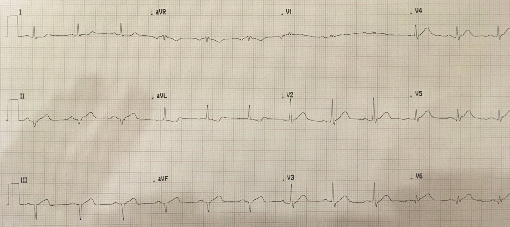
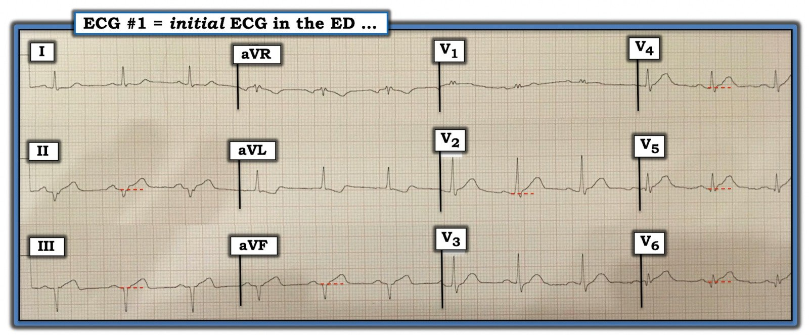

20/10/2019 — Bệnh nhân 60 mấy tuổi, đau thượng vị từng cơn 2 ngày. Vì sao bác sĩ tim mạch không đồng ý?
Bản dịch tiếng Việt của bài "60-something with 2 days of intermittent epigastric pain. Why does the cardiologist disagree?" – Dr. Smith’s ECG Blog. Giữ nguyên toàn bộ 4 hình ảnh của bản gốc.
Một trong những bác sĩ nội trú của chúng tôi, vừa tốt nghiệp được 3 tháng, đã nhắn cho tôi điện tâm đồ này:
“Chào Steve, rất mong nhận được bất kỳ ý kiến nào của anh về điện tâm đồ này. Bệnh nhân 60 mấy tuổi, 2 ngày đau thượng vị lúc tăng lúc giảm kèm vã mồ hôi. Bụng cũng ấn đau lan tỏa.”
Điện tâm đồ lúc nhập viện:


Câu trả lời của tôi: “OMI thành dưới và thành bên”
Diễn giải chi tiết: Nhịp xoang. Trục lệch trái, nhưng chưa hẳn là LAFB (không có sóng r ở các chuyển đạo dưới; không có sóng q ở aVL). Có ST chênh lên (STE) dưới 1 mm ở các chuyển đạo dưới, kèm ST chênh xuống soi gương (reciprocal). Có sóng T tối cấp ở các chuyển đạo dưới. Có sóng T tối cấp ở V2-V6.
Anh ấy trả lời: “Cảm ơn anh. Bệnh nhân đang được đưa đi thông tim, nhưng trước đó đã phải nghe không ít lời cằn nhằn từ khoa tim mạch….”
Kết cục:
Troponin I ban đầu = 52,0 ng/mL. Tắc 100% RCA đoạn gần. Rối loạn chức năng thất phải nặng trên siêu âm tim.
Câu hỏi của tôi: “Câu trả lời của tôi có giúp anh thuyết phục được bác sĩ can thiệp không?”
Anh ấy trả lời: “Thật ra kết quả troponin đã về trước khi anh trả lời và chính nó đã quyết định….mặc dù việc chuyện này xảy ra vào ban ngày trong một ngày thường cũng có ích. Tôi hình dung sẽ phải vất vả hơn nhiều nếu lúc đó là 2 giờ sáng.”
Câu hỏi của tôi: “Sao họ có thể nói với anh nhiều lời “cằn nhằn trịch thượng” như vậy khi troponin như thế?”
Anh ấy trả lời: “Bác sĩ tim mạch nói: ‘Khó mà gọi ca này là “cấp” khi bệnh nhân đã đau vài ngày và đã có sóng Q, phải không?”
Tôi trả lời: “Y văn sẽ nói rằng nếu ST vẫn còn chênh lên và/hoặc vẫn còn đau, và thời gian dưới 48 giờ (thiếu máu cục bộ dai dẳng), thì bệnh nhân nên được đưa vào phòng thông tim (cath lab). Sự hiện diện của sóng Q hay troponin tăng KHÔNG BAO GIỜ là lý do để không tiến hành tái tưới máu. Hơn nữa, không ai biết nhồi máu cơ tim của bệnh nhân thực sự bắt đầu từ lúc nào. “Đau lúc tăng lúc giảm, v.v.””
Anh ấy trả lời: “Thật tốt khi biết điều đó. Bệnh nhân cũng đang đau, điều mà tôi nghĩ là một chỉ định tốt. Họ cũng khăng khăng không chịu thấy bất kỳ ST chênh lên nào trên điện tâm đồ. Ngay cả sau khi tôi ghi điện tâm đồ thứ hai cho thấy rõ rệt hơn.”
Ngay cả khi bạn biết nhồi máu cơ tim của bệnh nhân đã quá 24 giờ, can thiệp ngay lập tức vẫn được chỉ định:
Bài báo dưới đây cho thấy ngay cả những bệnh nhân STEMI không triệu chứng đã 12-48 giờ cũng được cứu vớt cơ tim (myocardial salvage) nhiều hơn hẳn khi được PCI ngay lập tức so với những bệnh nhân chỉ được PCI khi cần (triệu chứng tái phát, v.v.)
Những điểm cần học:
Đọc điện tâm đồ bởi chuyên gia chính xác hơn nhiều so với triệu chứng lâm sàng trong việc đánh giá vùng cơ tim còn sống đang bị đe dọa trong OMI.
Khi hỏi bệnh sử cẩn thận, bạn phải phân biệt đau từng cơn lúc có lúc không (có thể là tắc rồi tái tưới máu lặp đi lặp lại) với đau liên tục, dai dẳng.
Schomig và cs. đã chứng minh kích thước ổ nhồi máu nhỏ hơn (và một xu hướng giảm tử vong nhưng chưa đủ lực thống kê) ngay cả ở các STEMI không triệu chứng trong khoảng từ 12 đến 48 giờ sau khởi phát triệu chứng.
Bài báo quan trọng
Schomig A và cs. Mechanical Reperfusion in Patients With Acute Myocardial Infarction Presenting More Than 12 Hours From Symptom OnsetA Randomized Controlled Trial. (Tái tưới máu cơ học ở bệnh nhân nhồi máu cơ tim cấp đến viện sau hơn mười hai giờ kể từ khởi phát triệu chứng: một thử nghiệm ngẫu nhiên có đối chứng.)
jin Ndrepepa, MD; Christina Markwardt, MD; Francesco Di Pede, MD; Stephan G. Nekolla, PhD; Klaus Schlotterbeck, MD; Helmut Schühlen, MD; Jürgen Pache, MD; Melchior Seyfarth, MD; Stefan Martinoff, MD; Werner Benzer, MD; Claus Schmitt, MD; Josef Dirschinger, MD; Markus Schwaiger, MD; Adnan Kastrati, MD; thay mặt Nhóm nghiên cứu thử nghiệm Beyond 12 hours Reperfusion AlternatiVe Evaluation (BRAVE-2)
Tạp chí JAMA. 2005;293(23):2865-2872. doi:10.1001/jama.293.23.2865
Toàn văn:
https://jamanetwork.com/journals/jama/fullarticle/201080 (toàn văn bài báo trên JAMA Network)
Tóm tắt
Bối cảnh Chưa có nghiên cứu nào được thiết kế riêng để xác định vai trò của can thiệp mạch vành qua da tiên phát ở bệnh nhân nhồi máu cơ tim cấp có ST chênh lên (STEMI) đến viện sau hơn 12 giờ kể từ khởi phát triệu chứng. Các hướng dẫn hiện hành không khuyến cáo điều trị tái tưới máu ở những bệnh nhân này.
Mục tiêu Đánh giá xem chiến lược điều trị xâm lấn ngay lập tức có liên quan đến giảm kích thước ổ nhồi máu ở bệnh nhân STEMI cấp đến viện trong khoảng từ 12 đến 48 giờ sau khởi phát triệu chứng hay không, so với chiến lược bảo tồn thông thường.
Thiết kế, bối cảnh và bệnh nhân Thử nghiệm ngẫu nhiên có đối chứng, nhãn mở, đa trung tâm, quốc tế, tiến hành từ ngày 23 tháng Năm năm 2001 đến ngày 15 tháng Mười Hai năm 2004, trên 365 bệnh nhân từ 18 đến 80 tuổi không có triệu chứng dai dẳng, nhập viện với chẩn đoán STEMI cấp trong khoảng từ 12 đến 48 giờ sau khởi phát triệu chứng.
Can thiệp Phân ngẫu nhiên vào chiến lược xâm lấn (n=182), chủ yếu dựa trên đặt stent mạch vành kèm abciximab, hoặc chiến lược điều trị bảo tồn thông thường (n=183).
Các tiêu chí đánh giá chính Tiêu chí chính là kích thước ổ nhồi máu thất trái cuối cùng trên chụp cắt lớp vi tính phát xạ đơn photon với technetium Tc 99m sestamibi, thực hiện trong khoảng từ 5 đến 10 ngày sau phân ngẫu nhiên ở 347 bệnh nhân (95,1%). Các tiêu chí phụ gồm tiêu chí gộp tử vong, tái nhồi máu cơ tim hoặc đột quỵ ở thời điểm 30 ngày.
Kết quả Kích thước ổ nhồi máu thất trái cuối cùng nhỏ hơn có ý nghĩa ở nhóm bệnh nhân được phân vào nhóm xâm lấn (trung vị 8,0%; khoảng tứ phân vị [IQR] 2,0%-15,8%) so với nhóm bảo tồn (trung vị 13,0%; IQR 3,0%-27,0%; P<.001). Khác biệt trung bình về kích thước ổ nhồi máu thất trái cuối cùng giữa nhóm xâm lấn và nhóm bảo tồn là −6,8% (khoảng tin cậy [KTC] 95%, −10,2% đến −3,5%). Các tiêu chí phụ gồm tử vong, tái nhồi máu cơ tim hoặc đột quỵ ở thời điểm 30 ngày xảy ra ở 8 bệnh nhân nhóm xâm lấn (4,4%) và 12 bệnh nhân nhóm bảo tồn (6,6%) (nguy cơ tương đối 0,67; KTC 95%, 0,27-1,62; P = .37).
Kết luận Chiến lược xâm lấn dựa trên đặt stent mạch vành kèm abciximab hỗ trợ làm giảm kích thước ổ nhồi máu ở bệnh nhân STEMI cấp không có triệu chứng dai dẳng, đến viện từ 12 đến 48 giờ sau khởi phát triệu chứng.

===================================
BÌNH LUẬN CỦA TÔI, bởi KEN GRAUER, MD (20/10/2019):
===================================
Tôi khó mà tin được rằng bác sĩ tim mạch điều trị chính đang trực lại không tính đến khả năng OMI trong ca này hoặc là cấp và/hoặc đang tiếp diễn.
- CÂU HỎI CỦA TÔI: Đây là ý kiến của bác sĩ tim mạch điều trị chính — hay của một bác sĩ nội trú, hoặc một bác sĩ nội trú chuyên khoa tim mạch (fellow) ít kinh nghiệm hơn? Nếu đó là ý kiến của bất kỳ ai ngoài bác sĩ tim mạch điều trị chính — thì tôi đề nghị trực tiếp hội chẩn với bác sĩ tim mạch điều trị chính được phân công phụ trách ca này (và đảm bảo rằng bác sĩ đó đã trực tiếp xem điện tâm đồ này trước khi đưa ra quyết định).
Để rõ ràng — tôi đã đưa lại điện tâm đồ của ca này ở Hình 1. Tôi sẽ tập trung Bình luận của mình vào các điểm sau.
- Bạn nên làm thế nào để định tuổi (các) ổ nhồi máu mà chúng ta thấy ở Hình 1?
- Bạn có đồng ý với nhóm tim mạch — những người “khăng khăng không chịu thấy bất kỳ ST chênh lên nào” trên bản ghi này không? Nếu BẠN không đồng ý — thì ST chênh lên ở những chuyển đạo nào?
- Hình thái QRS ở các chuyển đạo dưới có phù hợp với LAHB? — với nhồi máu thành dưới? — hay, có thể là với cả hai?
- Hình dạng phức bộ QRS ở chuyển đạo V1 có bình thường không? Nếu không — thì hình dạng QRS ở chuyển đạo V1 của bản ghi này có thể có liên quan đến ca bệnh này không?


Phân tích mô tả về điện tâm đồ ở Hình 1: Như thường lệ, tôi chủ trương thường quy sử dụng một Cách tiếp cận hệ thống cho từng điện tâm đồ mà bạn đọc (Xem thêm về điều này trong Bình luận của tôi ở bài Blog ngày 28/6/2019 của Dr. Smith). Không thường quy sử dụng một Cách tiếp cận hệ thống sẽ dễ dẫn đến bỏ sót những dấu hiệu có thể quan trọng (Xem bên dưới — vì không ai nhắc tới hình dạng QRS ở chuyển đạo V1 của bản ghi này … ) — BẤM VÀO ĐÂY để xem thêm về Hệ thống của tôi.
- Về Tần số và Nhịp của điện tâm đồ ở Hình 1: nhịp xoang, tần số ~75/phút.
- Tất cả các Khoảng (PR, thời gian QRS, QTc) đều bình thường. LƯU Ý: Cần đo mọi khoảng ở chuyển đạo mà bạn thấy rõ điểm bắt đầu và điểm kết thúc của khoảng đó — và là chuyển đạo có khoảng đó dài nhất! Mặc dù phức bộ QRS trông có vẻ dài hơn bình thường ở một số chuyển đạo (tức là chuyển đạo V1, V6) — QRS không dài quá nửa ô lớn ở bất kỳ chuyển đạo nào (tức là không quá 0,10 giây) — vì vậy phức bộ QRS không bị kéo dài!
- Có trục lệch trái rõ rệt (Lưu ý các phức bộ QS ở mỗi chuyển đạo dưới)! Tuy vậy (như Dr. Smith đã nhấn mạnh) — hình thái QRS ở các chuyển đạo chi không điển hình cho chỉ đơn thuần LAHB (Left Anterior HemiBlock – blốc phân nhánh trái trước) — vì thay vì phức bộ qR ở chuyển đạo I cùng với phức bộ rS ở mỗi chuyển đạo dưới — thì lại không có sóng q đầu ở chuyển đạo I, và không có sóng r đầu ở các chuyển đạo dưới.
- ĐIỂM THEN CHỐT (PEARL): Dấu hiệu phức bộ QS ở mỗi chuyển đạo dưới có thể là do: i) Nhồi máu cơ tim thành dưới; ii) LAHB; và/hoặc, iii) Nhồi máu cơ tim thành dưới + LAHB. Đơn giản là không có cách nào phân biệt giữa 3 khả năng này chỉ dựa trên một điện tâm đồ duy nhất ở Hình 1. Linh cảm của tôi (dựa trên hình ảnh tổng thể của điện tâm đồ này) là các phức bộ QRS mà chúng ta thấy ở đây trong mỗi chuyển đạo dưới phản ánh cả nhồi máu cơ tim thành dưới + LAHB — nhưng tôi không thể chứng minh điều này.
- Không có Lớn các buồng tim.
Về Thay đổi Q–R–S–T:
- Như đã nêu — có các phức bộ QS ở từng chuyển đạo thành dưới. Cũng có sóng Q ở chuyển đạo V5 và V6. Đặc biệt khi xét đến biên độ QRS rất nhỏ ở chuyển đạo V6 — sóng Q ở chuyển đạo V6 này chắc chắn là bất thường (tức là, nó không phải là một sóng q vách “bình thường”)!
- Về Tăng tiến sóng R — phức bộ QRS rất nhỏ ở chuyển đạo V1 dương hoàn toàn. Điều này không bình thường — vì phức bộ QRS bình thường ở chuyển đạo V1 phải chủ yếu âm (phản ánh thực tế là quá trình khử cực thất trái phải được nhìn thấy như đang đi ra xa chuyển đạo V1 nằm bên phải). Việc phát hiện sóng R cao (hoặc ưu thế) ở chuyển đạo V1 cần gợi ý xem xét một danh sách ngắn các thực thể chẩn đoán (BẤM VÀO ĐÂY — để Ôn tập DANH SÁCH này). Trong ca cụ thể này — có một sóng s tận hẹp nhỏ nhưng chắc chắn có mặt ở cả hai chuyển đạo I và V6. Xét đến QRS hẹp + dạng rr’ của phức bộ QRS ở chuyển đạo V1 — các tiêu chuẩn điện tâm đồ đã được thỏa mãn cho IRBBB (blốc nhánh phải không hoàn toàn). LƯU Ý: Điều này đặt ra câu hỏi liệu một dạng blốc hai phân nhánh — mà có thể là mới — có hiện diện trên điện tâm đồ #1 hay không (tức là, IRBBB/LAHB) — điều này có liên quan, khi xét đến việc chúng ta đang cân nhắc OMI gần đây/cấp/đang diễn ra.
Quay lại điện tâm đồ ở Hình 1 để đánh giá 2 thông số cuối cùng trong phần đánh giá Q-R-S-T của tôi = Bất thường sóng ST-T:
- Như Dr. Smith đã nêu — có các sóng ST-T tối cấp ở nhiều chuyển đạo — bao gồm 3 chuyển đạo thành dưới + các chuyển đạo từ V2 đến V6. Đỉnh của sóng T ở từng chuyển đạo này béo hơn mức đáng có và, đáy sóng T rộng hơn dự kiến. Dù người ta có thể nghi ngờ tính chất “tối cấp” của sóng T ở chuyển đạo V2 và V3 (nếu chỉ xem riêng các chuyển đạo này) — thì không thể nghi ngờ rằng biên độ sóng T (so với biên độ QRS ở cùng chuyển đạo) cao một cách không tương xứng ở các chuyển đạo V4, V5 và V6. Theo khái niệm “chuyển đạo lân cận” — vì sóng T ở V6, V5 và V4 rõ ràng là tối cấp — hình dạng đỉnh sóng T tròn hơn và béo hơn ở các chuyển đạo lân cận V2 và V3 gần như chắc chắn là một phần của quá trình này!
- Tôi vẫn khó tin rằng một Bác sĩ điều trị chính chuyên khoa Tim mạch giàu kinh nghiệm lại “kiên quyết từ chối nhìn thấy bất kỳ ST chênh lên nào” trên điện tâm đồ #1. Các đường chấm ĐỎ nằm ngang mà tôi đã vẽ ở không dưới 7 chuyển đạo trong Hình 1 cho thấy một mức ST chênh lên nhỏ nhưng chắc chắn có mặt ở mỗi chuyển đạo dưới-bên (cũng như có lẽ ở cả chuyển đạo V2).
- Như chúng tôi đã nhấn mạnh nhiều lần trong Blog này — sự hiện diện của “kỳ diệu” hình ảnh soi gương ở góc nhìn đối diện đối với hình dạng đoạn ST ở chuyển đạo III và aVL cho chúng ta biết đã có OMI thành dưới gần đây (nếu không phải là cấp) cho đến khi bạn chứng minh được điều ngược lại!
- Đoạn ST ở chuyển đạo I cũng không bình thường! Hãy chú ý xem đoạn ST này thẳng đến mức nào — điều này tạo ra một góc gập đột ngột tại điểm đoạn ST nối với sóng T dương nhỏ ở chuyển đạo I. Một đoạn ST bình thường phải dốc lên từ từ, với sự chuyển tiếp không nhận thấy được từ đoạn ST sang sườn lên của sóng T.
- ĐIỂM THEN CHỐT (PEARL): Bất thường cuối cùng mà tôi thấy trên bản ghi này là sóng T nhỏ nhưng dương ở chuyển đạo V1. Với sự hiện diện của IRBBB — bình thường chúng ta phải dự kiến sóng ST-T âm ở chuyển đạo V1. Ngoài ra — đường ngang ĐỎ ở chuyển đạo V2 của Hình 1 gợi ý có một mức ST chênh lên nhỏ ở chuyển đạo này. Dù phải thừa nhận rằng ban đầu tôi không chắc chắn về ý nghĩa của các dấu hiệu này — linh cảm của tôi là chúng là một phần của toàn bộ quá trình cấp tính (Xem bên dưới).
- ĐIỀU CỐT LÕI: Không dưới 11 trong 12 chuyển đạo trên điện tâm đồ này (tất cả các chuyển đạo trừ chuyển đạo aVR) cho thấy sóng ST-T bất thường — cũng như khả năng có blốc hai phân nhánh đã nêu ở trên.
Nhận định lâm sàng về điện tâm đồ này: Chúng ta cần nhớ Bệnh sử của bệnh nhân này = 2 ngày “đau thượng vị lúc tăng lúc giảm và vã mồ hôi” ở một người 60 mấy tuổi.
- Dù phải thừa nhận rằng bệnh nhân này không có đau ngực một cách cụ thể — các Nghiên cứu Framingham từ lâu đã dạy chúng ta rằng ít nhất 1/4 (nếu không phải 1/3) tổng số ca nhồi máu cơ tim là “Nhồi máu cơ tim thầm lặng” = không kèm theo đau ngực (tức là, thay vào đó kèm theo hoặc một “triệu chứng tương đương đau ngực” khác, như khó thở, thay đổi ý thức, hội chứng “giống cúm”, đau tiêu hóa — hoặc hoàn toàn không có triệu chứng nào). Vì vậy, bệnh sử trong ca này có khả năng phù hợp với một biến cố gần đây hoặc mới trong 2 ngày trước khi đến khoa cấp cứu!
- Như Dr. Smith đã nêu — điện tâm đồ ở Hình 1 phù hợp với OMI dưới-bên. Ngoài ra — tôi muốn thêm định ngữ OMI không rõ tuổi, mà có thể là cấp hoặc đang diễn ra. Phải thừa nhận rằng, các phức bộ QS ở thành dưới gợi ý đây có thể là một biến cố đã hoàn tất — NHƯNG — có một mức ST chênh lên nhỏ nhưng chắc chắn không thể nhầm lẫn ở nhiều chuyển đạo + sóng ST-T tối cấp ở nhiều chuyển đạo + thay đổi soi gương dạng hình ảnh phản chiếu ở chuyển đạo aVL + có thể có blốc hai phân nhánh không rõ tuổi ở một người trưởng thành 60 mấy tuổi với bệnh sử 2 ngày có triệu chứng mới có thể là một “triệu chứng tương đương đau ngực” — điều mà với tôi có nghĩa là không có cách nào loại trừ một biến cố gần đây (nếu không phải là cấp hoặc đang diễn ra) dựa trên điện tâm đồ ban đầu này.
- Nhìn lại — chúng tôi được biết rằng thông tim cấp cho thấy tắc 100% RCA đoạn gần — và, siêu âm tim cho thấy rối loạn chức năng thất phải nặng. Xét đến IRBBB, và thực tế là thường phải có ST-T chênh xuống ở các chuyển đạo phía trước với dấu hiệu này + dự kiến thông thường của chúng ta về nhồi máu cơ tim thành sau đi kèm (với ST chênh xuống ở thành trước) cùng với nhồi máu cơ tim thành dưới cấp — tôi cá rằng sóng T dương ở chuyển đạo V1 và ST chênh lên mà chúng ta thấy ở chuyển đạo V2 đều phản ánh tổn thương thất phải cấp!
- ĐIỀU CỐT LÕI: Trách nhiệm chứng minh trong ca này phải là chứng minh rằng thông tim kịp thời là không có chỉ định — chứ không phải ngược lại. Thật khó hình dung rằng nhóm Tim mạch lại không ít nhất tích cực cân nhắc điều này, ngay cả trước khi biết rằng troponin huyết thanh tăng …
Chúng tôi xin CẢM ƠN Dr. Smith vì đã trình bày ca bệnh này!